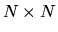

| Milk Bottle Data |
There is a box of the shape of an  lattice. Each grid of the lattice may contain a milk bottle or none. Mr. Smith wrote down the data of the box by making a record for each row from left to right and each column from top to bottom. In each record, `1' indicaes that there is a bottle in the corresponding grid and `0' does not. Unfortunately, the order of these records is thrown into confusion, and some of these records have corrupted.
Now it's up to you to provide a program to recover these data:
i.e. to give the original arrangement of the box and give real values for
those corrupted data.
1 01210 21120 21001 12110 12101 12101 00011 22222 11001 10010
9 8 6 2 7
4 1 0 1 1 0
10 1 0 0 1 0
1 0 1 1 1 0
3 0 1 0 0 1
5 1 1 1 0 1